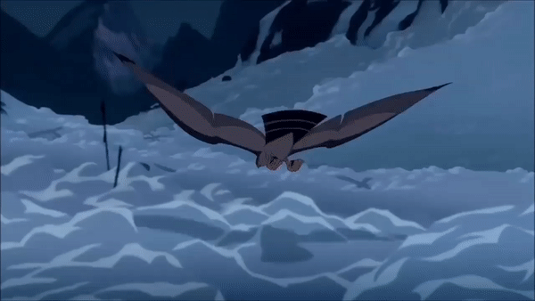
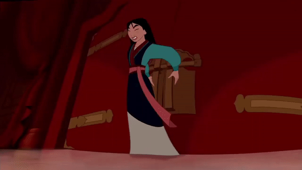

"Perfect"
"Perfect" is the chilling quote Shan Yu states after scaling the Great Wall. And perfect it is; not only representing Shan Yu's physical feat of making a leap on the tower in a single bound from the bottom of the Wall (otherwise, there would have been ropes on seen from the other side), to somehow being able to get his cavalry over his horse. Remember, as the Huns don't have gunpowder, they can't simply blow a hole open in the Wall. Instead, they likely used a combination of ingenuity and brute strength to multiply their lethality via transferring their cavalry. Perfect indeed.

"He invited me"
Another one of Shan Yu’s sarcastic quips, slightly distracting the audience from the fact that he was able to sense or sniff out two imperial scouts. While riding on a fast horse. While riding away from a burning village, likely having inhaled some smoke. While riding on a horse, away from a burning village, with at least several hundred other Hun scents nearby. Of course, this won’t be the first time or last time he’ll do something awesome and animalistic.
"...return it to her"
Shan Yu’s tracker abilities are on point here, but he takes the time to give his elite Hun squad and the audience to learn a thing or two from the missing doll. In classic Shan Yu fashion, after doing some quite impressive tracking, he ends with another sarcastic quip. This time, he additionally plays to the adult fear, casually threatening children. Take note: this is how you write a cold, heartless, and effective villain. This Disney villain doesn’t need a song. The subtletly of the line made it sail over my head when I was a child, I thought: “What a nice guy, returning the doll!” As an adult now, nothing throws a bucket of ice water on your training montage like a Shan Yu scene like this.

"The ... general."
And another bucket of ice water, where Shan Yu introduces the real horror of war by razing a village directly in Captain Shang’s path. Definitely took the morale out of the troops and perhaps redefining who is “A Girl Worth Fighting For”: a helpless, innocent girl with a doll who could do nothing to save her village from destruction. And even those that could defend themselves did not fare better. The second reveal shows that General Li Shang’s troops were utterly defeated; their corpses littered on the underside of a cliff like any war movie. We can only speculate what Shan Yu and the Huns did, and in no scenario is it pretty.

"LIKE DAISIES!"
At this point, Shan Yu has suffered a classic "Disney Villain Death": falling from a high distance, with some variations based on the environment. If the fall didn’t kill him, then surely being buried under snow for so long would. Quite fittingly, his final resting place is similar to the warrior carnage he left the General in. Alas, he made a very impressive charge and decimated China’s armies, but was ultimately stopped. Rest in piece, Shan Yu [Cue Fist] Except no. Shan Yu decides the movie’s not quite over yet, and after pushing his hand out of the snow like a zombie, he gives an epic war cry, "resurrecting" not only his elite squad (two of which are shirtless, and one buried under some significant wood wreckage) but our protagonist Mulan back into action. All the while pulling off the most epic animated V-shot I’ve seen. Eddie Murphy, you understate Shan Yu.

"kneel ... in pieces!"
Up until this point, Shan Yu had only been temporarily stopped by being buried under an avalanche and having a cannon go off right in front of his horse. So of course, all that the second best warrior of China can do is slow him down. The fight is very brief, but Shan Yu spends the opening parts toying with Shang, throwing him off the tower and pinning him to the ground without seriously attacking. When the Emperor is carried away by Chien Po, Shan Yu goes all business: his first left reverse elbow, thrown at an extreme angle, clearly dazes Shang. Shan Yu then grabs Shang’s head with both hands and headbutts him so hard Shang doesn’t mount another effective offense in the movie, and spends the climax running away from the action. Then, he biel throws Shang so far it would put the Big Show to shame. KO!

Dynamic Entry I: Palace
The final fight of Mulan plays out a boss fight, where all of Shan Yu’s prowess is pitted against the team of protagonists. This is the first of a series of dynamic entries (D.E.) where Shan Yu is able to enter the scene through unconventional and often surprising means. Shan Yu being able to falcon whisper to Hayabusa to grab his sword and return it to him, get to the roof of the palace unnoticed, and coordinate his men to burst out of the dragon in the victory celebration of your defeat is definitely one way to show China you’re back and you mean business. Not to mention the nice touch trolling all of China by pretending to be a gargoyle on the roof. Of course, he also lets out a seriously good cackle that echoes throughout the Forbidden City as well.

Dynamic Entry II: Door
A classic horror villain trope is to have the victim be safe behind a locked/well-secured door or barrier, only for the killer to be able to bust through. For example, Jack Torrance in The Shining. However, Shan Yu has some serious strength to be able to bend the whole door with each impact, followed by a left-handed punch that’s only a foot away from seriously KOing our heroine in a (rather anticlimactic) fashion. He takes a break to allow the heroes to discuss a plan to stop him, and then throws a right-punch that shatters a good 80% of the door. Of course, not once does he consider using the hole he initially created to pull open the latch, use the sword that’s in his other hand to do some serious home redecoration, or go around the door on the outside, because he wants to make it interesting.

Deforestation
One of the other reasons why I believe Shan Yu is a beautifully written character. Deforestation by purely mechanical tools is rare nowadays, but before the machines, loggers had to go with band saws and axes. Apparently, nobody told that to Shan Yu, who seems to chop up wood just as efficiently with a serrated flamberge-style dao. We’ve seen him do that earlier: in the introduction to his tracking scene, he chops off the top of a tree to get a better view, showing the audience that he IS the view. We see that return in full force here, where he mows down three pillars in quick succession to get to Mulan, because apparently people also forgot to tell Shan Yu that you could go around the poles as well. But like any craftsman, Shan Yu works with the tools he has.

Dynamic Entry III: Roof
One thing that you might not notice on your first watching of Mulan, given Shan Yu’s body type, is that Shan Yu has the agility of a cat. He can jump very high, and that is foreshadowed beautifully: once when scaling the Great Wall to meet the Chinese soldier who lit the signal, and once when descending the tree he decapitated to talk to this troops. Therefore, similar to the Deforestation, you can’t call BS on him being able to rocket through the ceiling like a, well, rocket because it’s been set up and built into his character. And again, like Dynamic Entry: Door, dumb luck only saves Mulan: had she been took a step further back and been directly under Shan Yu when he popped through the ceiling like a coked-out daisy, she would have likely fallen to her death.

Unprejudiced I: Women
AKA the soldier from the mountains. There are three men in the movie that perhaps aren’t ever sexist towards Mulan, believing that as a woman she could accomplish all she did. One is Fa Zhou, her father, who is shown to love her unconditionally even if she’s bad at being ladylike. One is the Emperor, who has heard a lot about Mulan and also witnessed firsthand Mulan dispatching Shan Yu when no one else could. And, heavily contributing to his dangerous nature, the final one is Shan Yu, perhaps because there were female warriors in Mongolia. After seeing a movie where the majority of the men underestimate or belittle Mulan for her gender, it’s refreshing to see Shan Yu treat Mulan as a serious threat once she reveals her identity. An admirable virtue, unfortunately towards the peril of our protagonist. Shan Yu is an equal-opportunity killer.

Unprejudiced II: Body Types
Looking at the makeup of Shan Yu’s army, Shan Yu clearly believes in employing people to his cause via meritocracy. For example, his elite squad is clearly not built up only of massive dudes who can bench as much as he can; he has a thin archer that serves as the main voice of the elites as well. His elites are very diverse in body types; not all of them are broad-shouldered brutes, and they also have different skin color as well (take that, China!). And they clearly weren’t picked for merely being favorites; they get to show their insane tracking skills and are the only others to survive the avalanche as well. And of course, they themselves reflect some of the nuances Shan Yu taught them by being equal-opportunity: when the “ugly concubines” show up, at least one of them is polite enough to pick up Ling’s apple.